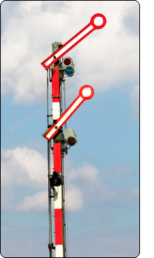
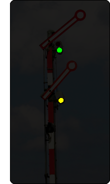
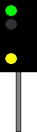

Signalbuch-Online / Hp-Signale
Signal Hp 2
Langsamfahrt
Tageszeichen:
Zwei Signalflügel zeigen schräg nach rechts aufwärts.
Nachtzeichen:
Ein grünes und senkrecht darunter ein gelbes Licht.


Ein grünes und senkrecht darunter ein gelbes Licht.

Das Signal schreibt die Geschwindigkeitsbeschränkung auf 40 km/h vor, wenn nicht eine abweichende Geschwindigkeit durch Signal Zs 3 angezeigt wird.
Bei den NE ist das im Fahrplan, in der Sbv oder in der La angegeben.
Bei den Eisenbahnen des Bundes werden andere abweichende Geschwindigkeiten im Fahrplan oder in der La angegeben.
Die Geschwindigkeitsbeschränkung gilt vom Hauptsignal ab für den anschließenden Weichenbereich.
Zum Öffnen der Galerie bitte Bild anklicken!


Informationen und Beispiele zum Verhalten im anschließenden Weichenbereich.